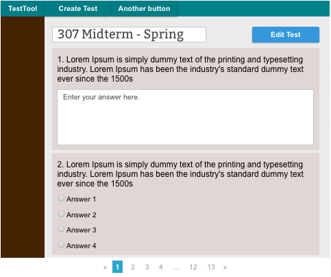

Figure 1: View Test Questions
When a user clicks on an existing test from the "View Tests"
page, a page with questions for that test are shown. This view is
similar the student view of the test, the user then navigates
through the pages and takes the test.
The "Edit Test" button takes the user is taken to the "edit test" view, any changes to the test is made on that screen.
Clicking on the numbers or the arrows at the bottom Figure 1 naviages the user through the question pages. The current view of the exam in Figure 1 is showing two questions per page.